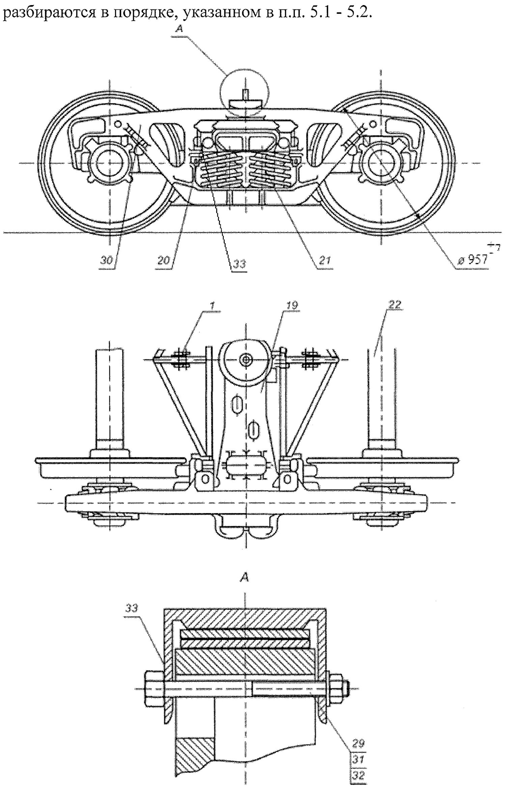
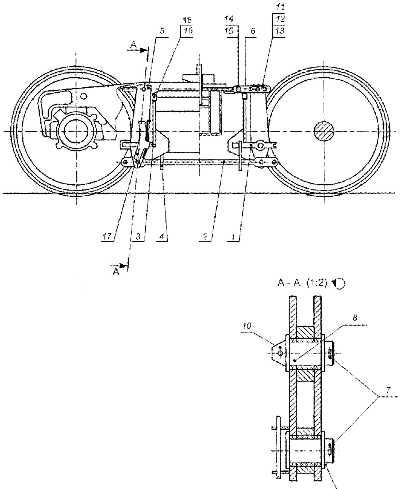
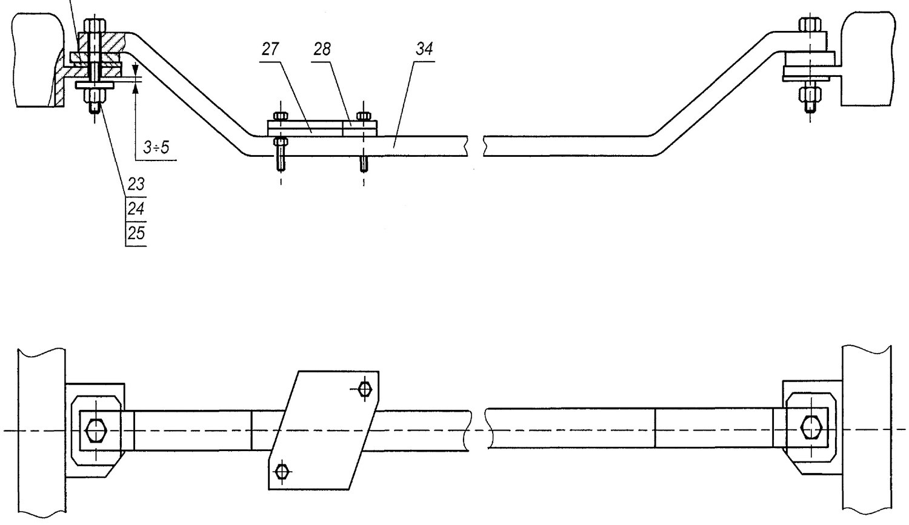

Aravachani qismlarga ajratish (razborka)
Ikki o'qli va to'rt o'qli aravachani ajratish ketma-ketligi, pozitsiyalar raqamlari va ehtiyot choralari.
Ajratish qayerdan boshlanadi (5.1-band)
Ikki o'qli aravachani ajratish yuvish mashinasi (kamerasi) oldida boshlanadi: aravacha ramasi yuk ko'targich mexanizmi bilan g'ildirak juftlaridan olinadi, g'ildirak juftlari esa ta'mir uchun g'ildirak-rolikli uchastkaga uzatiladi.
Tozalangandan so'ng aravacha ramasi oqim liniyasi pozitsiyasiga ko'chiriladi yoki maxsus ta'mir pozitsiyasiga o'rnatiladi.
Ikki o'qli aravacha ramasini ajratish ketma-ketligi (5.2-band)
Quyidagi tartib 5.1, 5.2 va 5.3-rasmlarga mos ravishda bajariladi. Qavs ichidagi raqamlar shu rasmlardagi pozitsiyalar:
- Chekalarni urib chiqaring va tormoz kolodkalarini (17), himoya skobalarini (4) yeching.
- Shplintlarni (7, 10) yeching.
- Shaybalarni (9) yeching, valiklarni (8) urib chiqaring, vertikal richaglarni (5) va tirgak tortqini (2) yeching.
- Shplintlarni (15) urib chiqaring, shayba va valiklarni (14) yeching; shplint (11), shayba (12) va valik (13) ni olib tashlagandan keyin «o'lik nuqta» sergasini (6) yeching.
- Bashmak osmasi valigi himoya skobasining sim-fiksatorini chiqaring, shaybalarni yeching.
- Shplint (18) va o'qlarni (valiklarni) (16) urib chiqaring, triangelni (1) rama yonboshlarining himoya javonchalariga tushiring.
- Tormoz bashmagining osmalarini (3) yeching, triangelni (1) yeching — ayni vaqtda ikkinchi triangel ham yechiladi va ular ta'mir pozitsiyasiga uzatiladi.
- Shkvorenni chiqaring: nadressor balkasini (19) kran yoki kantovatelli pnevmatik ko'targich bilan ko'tarib, friksion ponalarni (20) va prujina komplektlarini (21) yeching.
- Harakatlanuvchi friksion plankani (33) yeching.
- Shplintni (23) chiqaring, gaykani (24) boltdan (25) burab yeching va boltni chiqaring; rezina-metall komplektini (26) va tayanch balkani (34) yeching.
- Kontakt plankasini (27) va rostlash plankasini (28) yeching.
- Shplintni chiqaring, gaykani (29) burab yeching, shaybani (31) va boltni (32) yeching, qalpoqlarni (33) yeching.
- Aravacha ramasining yonboshlarini kantovatelli ko'targichlar yordamida nadressor balkasidan yeching.
- Nadressor balkasi ko'targich-kantovatelda qoladi.



To'rt o'qli aravachani ajratish (5.3-band)
- Shkvoren yechiladi.
- Tormoz uzatmasining yuqori gorizontal richagi valiklari shplintdan chiqariladi, shaybalar va valiklar yechiladi.
- Kran yordamida biriktiruvchi balka yechiladi.
- «Pastki» gorizontal richag yechiladi.
- Bo'shagan ikki o'qli aravachalar ta'mir uchastkasiga uzatiladi va 5.1–5.2-bandlarda ko'rsatilgan tartibda ajratiladi.
Ajratish paytida diqqat qilinadigan nuqtalar
- Shplintlar qayta ishlatilmaydi — yig'uvda ular yangisiga almashtiriladi (6.7-band).
- Notipik chekalar va shaybalar tipik detallarga almashtiriladi (6.7-band).
- Yechilgan detallarni guruhlab qo'ying: har bir aravachaning ponalari, prujinalari va plankalari aralashib ketmasligi kerak — keyin komplektlash qiyinlashadi.
- Nadressor balkasini ko'targich-kantovatelda qoldirish tasodifiy emas: keyingi dеfektatsiya va podpyatnikni tozalash aynan shu holatda qulay bajariladi.
- Depo ta'mirida yoriq va yirtiqlari bo'lmagan polimer vtulkalarni qayta ishlatishga ruxsat beriladi — agar ularning yaroqlilik muddati keyingi ta'mirlararo davrda tugamasa (6.8-band).
Nazorat savollari
Avval o'zingiz javob bering, so'ngra tekshiring.
1. Ikki o'qli aravachani ajratish qayerdan boshlanadi?
2. Nadressor balkasini ko'tarishdan oldin nima chiqariladi?
3. Yechilgan shplintlar qayta ishlatiladimi?
4. To'rt o'qli aravachani ajratishda birinchi navbatda nima yechiladi?
5. Polimer vtulkalarni qayta ishlatish mumkinmi?
Manba: РД 32 ЦВ 052-2009 — ГОСТ 9246-2013 bo'yicha zazorli yon skolzunli tip 2 yuk vagon aravachalarini ta'mirlash. Umumiy ta'mir rahbariyati (2026-yil 1-iyuldan amaldagi tahrir).
Andijon vagon deposi · telejka ta'mirlash sexi.